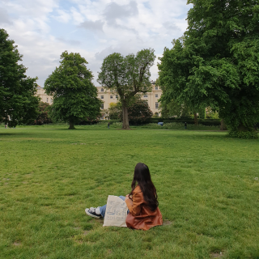

川上美空
Miku Kawakami
1996年 9月2日生まれ
大阪府大阪市出身
専門学校にてエアライン学科を卒業後、グランドスタッフとして勤務。
その後、韓国ソウルにてアパレルECサイト運営会社でのインターンシップに
参加し、翌年には同じく韓国ソウルにて1年間のワーキングホリディを経験。
その際に韓国情報サービスを発信する会社にてブログ記事作成と翻訳を担当し、
これらの経験から本格的にWeb制作やデザイン、マーケティングについて
学びたいと思い始め、職業訓練校にて学び現在に至ります。
文書作成、表・イラスト
図形等の挿入、差し込み印刷
表作成、グラフ作成、
関数（IF・VLOOKUP等）、
ピボットテーブル
スライド作成（表・イラスト・
図形・アニメーション等の挿入）
ロゴやバナー作成などの作業が可能です。

写真の補正や加工、GIF画像作成などの作業が可能です。
DreamWeaverを使用しての、
HTML、CSSのコーディングが可能です。
HTML5に沿ったwebサイトのコーディングが可能です。
レスポンシブデザインにも対応できます。
CSS3に沿ったwebサイトのコーディングが可能。
レスポンシブデザインにも対応できます。